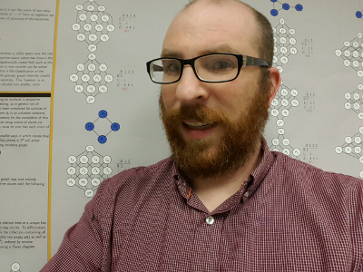

Curriculum VitaeContact Information
E-mail: dtorrance@piedmont.eduOffice: S-332
Office Phone: 706-778-8500 x1294
Office Hours: (Fall 2015) Mon 9 - 10, 11 - 12, 1 - 3; Tues 2 - 3; Wed 9 - 10, 11 - 12, 2 - 3; Fri 9 - 10, 11 - 12, 1 - 2
Teaching
Fall 2015
- Math 1113 - Precalculus
- Math 2100 - Elementary Statistics
- Math 2470 - Calculus III
- Math 3500 - Elementary Numerical Methods
Research
Interests
Algebraic geometry and commutative algebraPapers
- Nondefective secant varieties of varieties of completely decomposable forms, Ph.D. thesis
- Castelnuovo-Mumford regularity and arithmetic Cohen-Macaulayness of complete bipartite subspace arrangements (with Zach Teitler), J. Pure Appl. Algebra, 219(6):2134-2138, 2015 (arXiv)